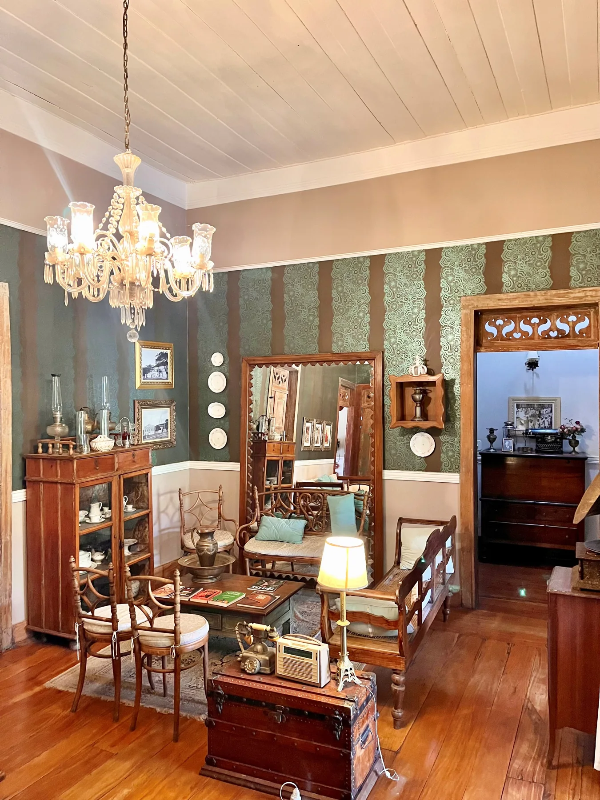
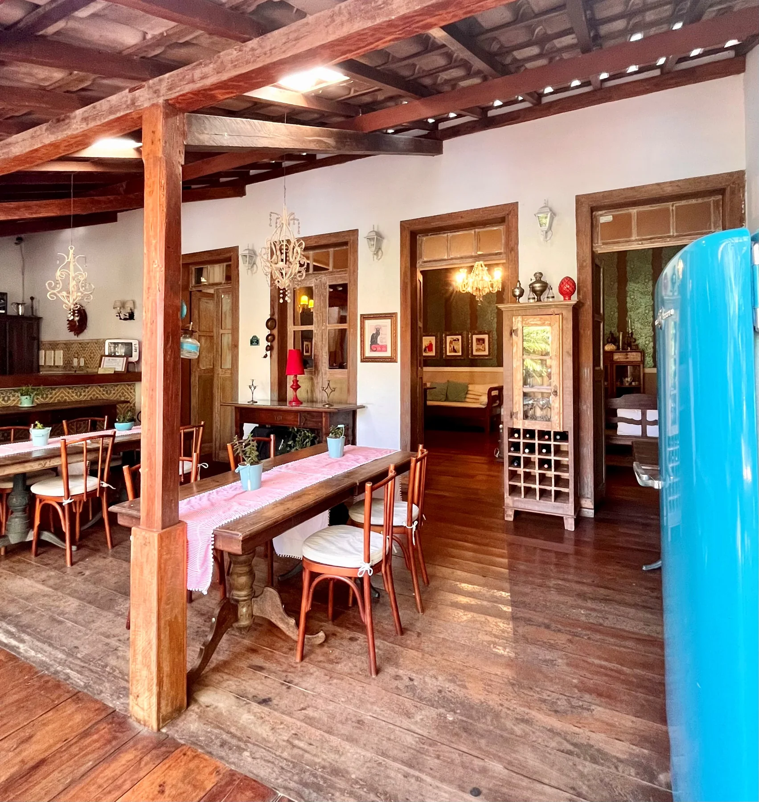
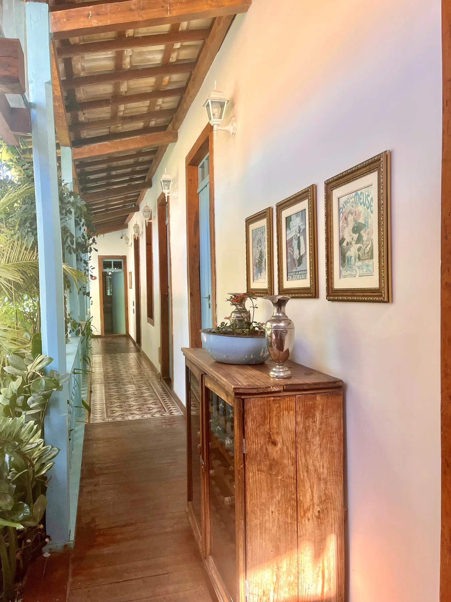
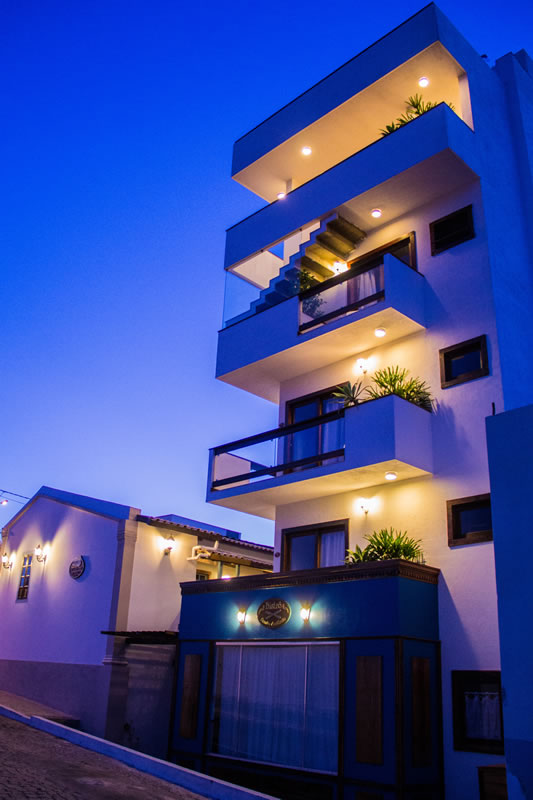
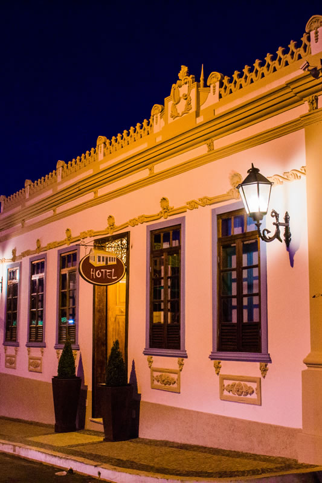

O encontro com o casarão
Construído no século XIX, o imóvel faz parte da paisagem histórica de Caetité. A decisão de adquiri-lo nasceu do desejo de proteger sua arquitetura e manter viva uma parte importante da identidade da cidade.
O Hotel
Construído no século XIX, o imóvel faz parte da paisagem histórica de Caetité. A decisão de adquiri-lo nasceu do desejo de proteger sua arquitetura e manter viva uma parte importante da identidade da cidade.
Durante uma viagem a Lençóis, os proprietários conheceram um hotel instalado em uma casa antiga. A experiência mostrou que o casarão também poderia ganhar um novo uso: acolher hóspedes sem perder sua história.
Foram quatro anos e meio de trabalho entre a recuperação da construção original e a criação da ala contemporânea. O projeto aproximou épocas diferentes com equilíbrio, funcionalidade e respeito ao patrimônio.
Hoje, vinte apartamentos se distribuem entre o casarão e a área nova. Móveis de época, lembranças de família, peças de artesãos locais e soluções atuais formam ambientes singulares, confortáveis e acolhedores.

Arquitetura
Portas, madeiras, mobiliário e objetos contam a história da casa. A ala contemporânea amplia a experiência com espaços funcionais, sem competir com a identidade do casarão.
O resultado é um hotel em que cada ambiente possui caráter próprio e a arquitetura faz parte da hospedagem.
Antigamente e hoje
O Vila Nova do Príncipe conecta a delicadeza do casarão histórico à simplicidade da arquitetura contemporânea. A comparação revela o que foi preservado e como o hotel evoluiu para receber seus hóspedes.

Antes de se tornar hotel, o casarão já integrava a paisagem da Praça da Catedral. Sua preservação manteve elementos arquitetônicos e referências que ajudam a contar a história da cidade.

O restauro e a ampliação transformaram a casa em uma hospedagem completa. As alas histórica e contemporânea convivem com naturalidade, reunindo conforto, design, objetos de época e artesanato regional.
Mais do que conservar uma fachada, o projeto mantém a casa presente na rotina de Caetité. Cada estadia ajuda a renovar essa história e a dar continuidade ao patrimônio.
O hotel hoje
Fachada, interiores, jardins, piscina e vistas que revelam as diferentes atmosferas do Vila Nova do Príncipe.







